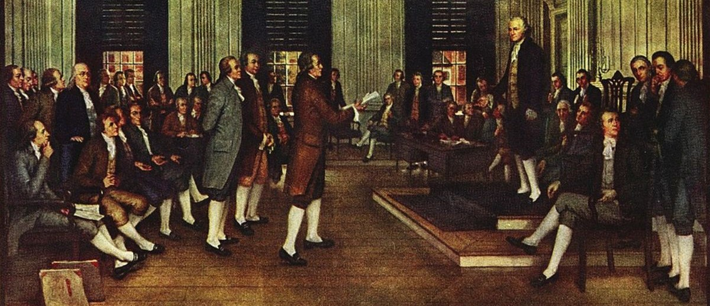

In the late 1700s high socks where all the rage. As seen in the figure below we can see that all those involved in the politicking of the U.S constitution had on knee high white socks. In my research studies I have found that their attire can directly be linked the the things they were able to accomplish. For one with knee high socks one is invulnerable to injuries from sharp shrubs low to the ground. That’s one less thing the great founding fathers had to worry about which is one of the reasons they were able to be so successful. Another great benefit is that having knee high socks means you are always ready to partake in a game of pickup soccer. The user simply has to insert their shin guards and leap into action. It is a universally accepted theory that a foos downness can be measured with a simple mathematical equation. Which is the greater the length of ones tube socks the crazier said individual is. A foo is a term used by members of the Urban Mexican community that originated in California and is shorthand for fool. The sock check became a popular tradition amongst skaters and cholos across California after it was discovered that foos with lowcut socks are in fact not down at all. Having immense levels of downness is extremely important for the survival and well being of our youth. This nation was founded by some of the downest foos and a lot of their success can be credited to the length of the socks they wore on a daily basis. There are so many benefits to high rise socks like increased warmth retention, protection against shrubs, thorns bugs and bruising and increased storage capacity.
